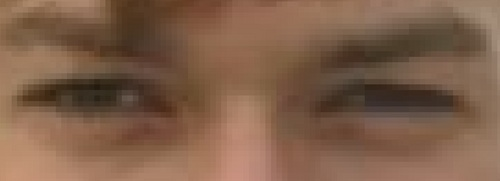

With cultural influence of French, Spanish and Italian origin at home as well as German and Anglo Saxon over the social entourage I consider myself as thoroughly Swiss.
+
Since the first time that I opened a book about aviation (In the local library of my hometown, I was 9) I wanted to build airplanes. For that, I have known that I will end up as a mechanical engineer. Saying so, I still find that I am still the same Boy as I was then in terms of Dreams and Ideals.
... hit the keys quite often. too often on a pc and not often enough on a pc. however, they really like to get dirty outdoors. chop wood, dig holes and plant food, they are pretty useful fo all of this. sometimes they are even useful for tinkering. essential to cook a good meal.
... play over the clouds or
... are down on earth and like to wear hiking boots and to pedal.
... see far. and do enjoy sergio leone, woody and the coen brothers. in general they like seeing mother nature, old buildings and clean streets. also my good friends and my family. they also take over my mind when an airplane flies by.
... like to hear classics a lot. from over the centuries, good songs have accumulated from many genes, especially in rock funk jazz and pop. and, of course antonio jobim, ennio morricone, the stones, CCR, RHCP and ella fitzgerald. but sometimes, the wind rushing through the forest and the water flowing down a brook is unbeatable.
... is big - but empty without mountains in the background.
... unfortunately never gets enough of anything. feel free to feed it.
With cultural influence of French, Spanish and Italian origin at home as well as German and Anglo Saxon over the social entourage I consider myself as thoroughly Swiss.
+